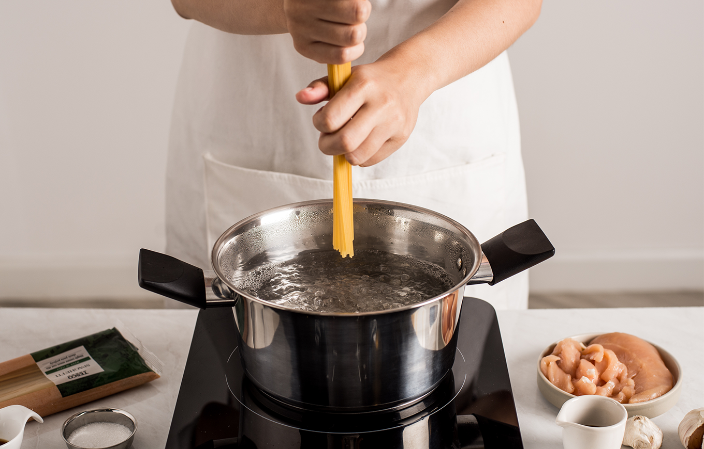
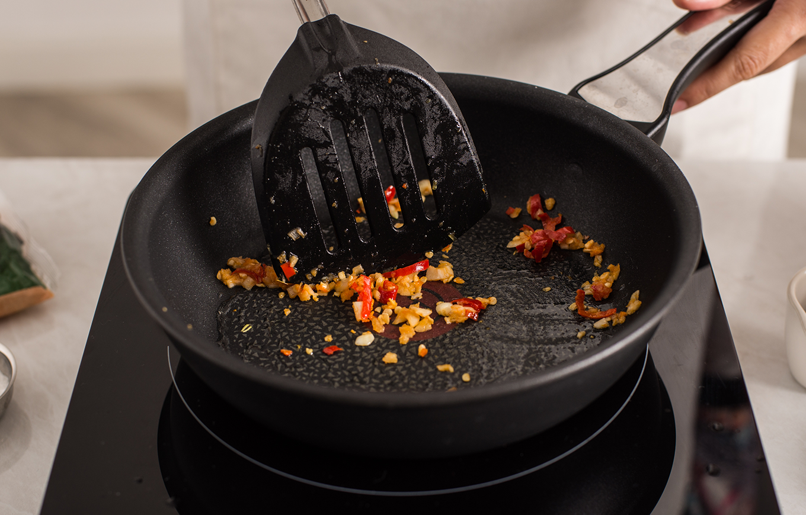
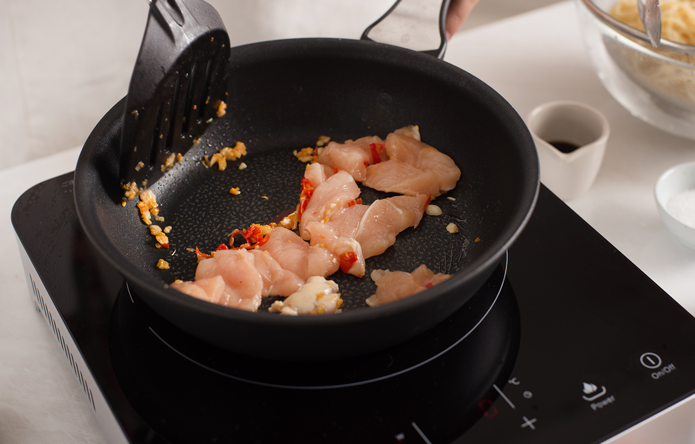
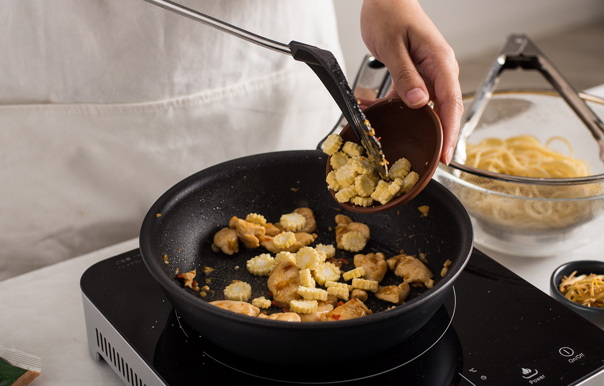
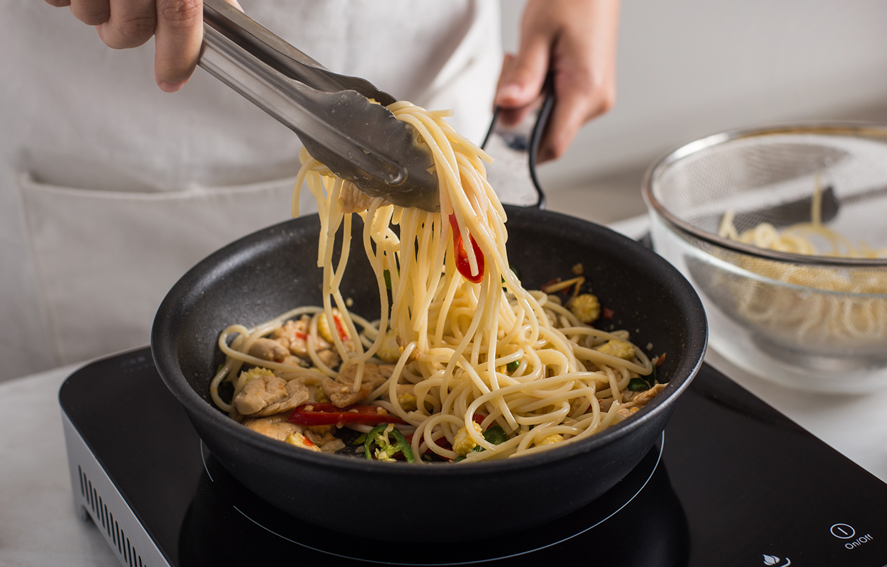
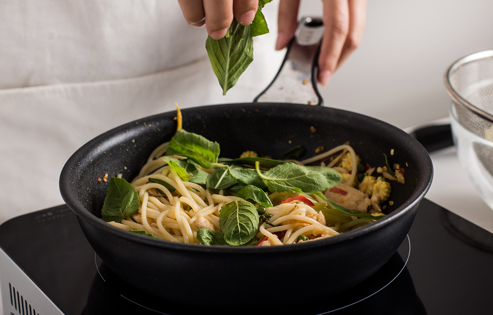
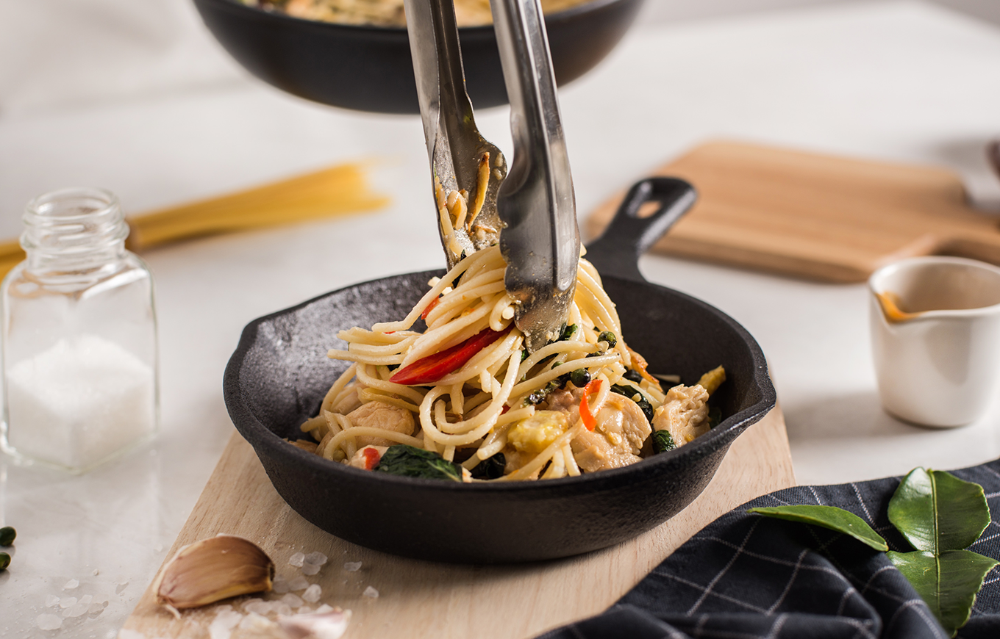

STEPS

1. Bring a large pot of salted water to a boil,
add the pasta and cook for 8 to 10 minutes or until tender yet firm
(as they say in Italian "al dente.") Drain the pasta well,
add 1 teaspoon of the vegetable oil to the pasta, mix it well and set aside.

2. Heat 1 tablespoon of the vegetable oil in a pan over a medium heat.
Add chopped garlic and sliced pepper in a pan, cook them for a minute.

3. Add sliced chicken breats, cook on high heat for several minutes,
constantly stirring and tossing until the chicken is almost done.

4. Lower the heat to medium, add in baby corn, finger roots, and green pepper.
Seasoned with oyster sauce, soy sauce and liquid stevia.
Continue to cook until the chicken and baby corn are completely cooked.

5. Add drained spaghetti to the pan and toss for 2 minutes to coat it well with the sauce.

6. Add Thai basil leaf and Kaffir lime leaf to the pan, stir-fried briefly for a minute until wilted in low heat.

7. Turn off the heat, mound spaghetti and sauce into serving bowls.
Garnish with some fresh Thai basil and sliced Cayenne pepper. Serve.